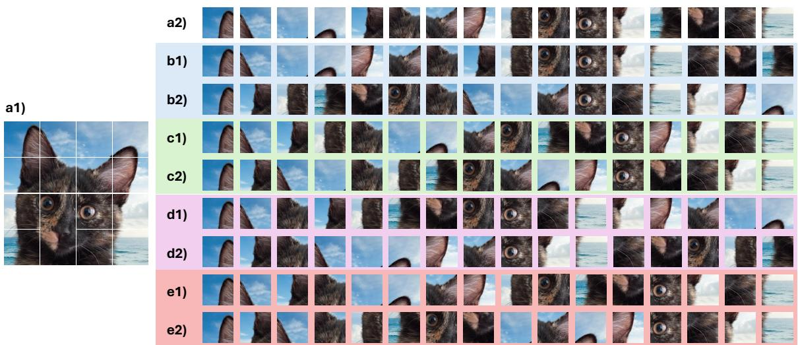

Spatial Priors via Space Filling：扫读即可，关注它是否能和 small-data SSL、DINO/MAE finetuning 或 token order 设计结合
把传统 CNN 的局部空间偏置以序列化方式转给 ViT，而不是靠大规模预训练弥补数据不足。
Spatial Priors via Space Filling Curves for Small and Limited Data Vision Transformers Leyla Naz Candogan, Arshia Afzal, Pol Puigdemont, Volkan Cevher；arXiv 元数据未稳定列机构时按作者列表记录。 arXiv 新增 + ICML 2026 原文链接
Figureure 13 · Attention heatmap visualization of VIOLIN DeiT-B: The average diagonalFigure 13. Attention heatmap visualization of VIOLIN DeiT-B: The average diagonal of the masked attention is visualized followed by (Liu et al., 2024b).这张可视化用来解释 Spatial Priors via Space Filling 学到的中间表征或对齐关系。重点看它是否支持正文里的机制判断。

Figureure 10 · Flattened Space Filling Curve paths: Examples of flattened images withFigure 10. Flattened Space Filling Curve paths: Examples of flattened images with different traversal paths followed in VIOLIN . (a1) Original patchedimage. (a2) Z-curve (b1) Snake curve, (b2) Transposed Snake curve, (c1) Zig-zag curve, (c2) Transposed Zig-zag curve, (d1) Hilbert curve, (d2) Transposed Hilbert curve, (e1) Peano curve, (e2) Transposed Peano curve.这张图来自论文 PDF 的结构化抽取。当前用于辅助理解 Spatial Priors via Space Filling 的方法或实验，请结合正文精读段落一起看。
核心问题
扫读即可，关注它是否能和 small-data SSL、DINO/MAE finetuning 或 token order 设计结合。
方法拆解
用 space filling curves 为 ViT patch/token 顺序注入空间先验，目标是在小数据或有限数据场景下改善 transformer 的空间 inductive bias。
主要贡献
把传统 CNN 的局部空间偏置以序列化方式转给 ViT，而不是靠大规模预训练弥补数据不足。
实验看点
摘要列表未给完整数字，本次只按 comments 和标题/摘要信号收录，建议后续看 ICML 正式页面或 PDF 实验表。